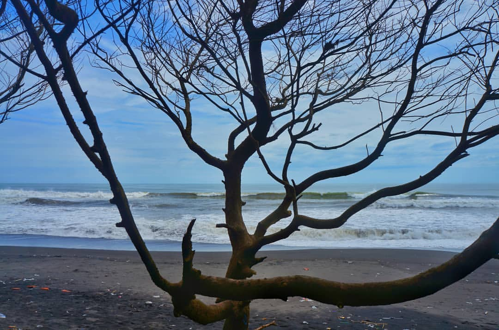
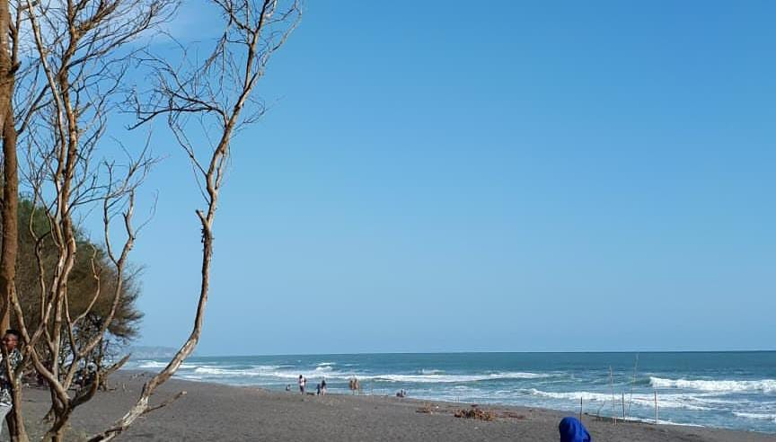
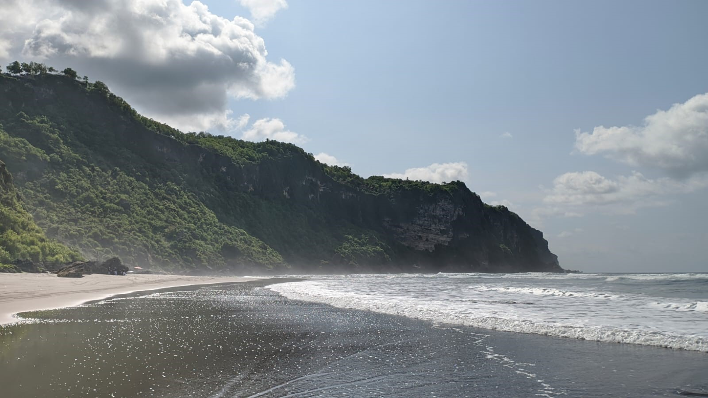
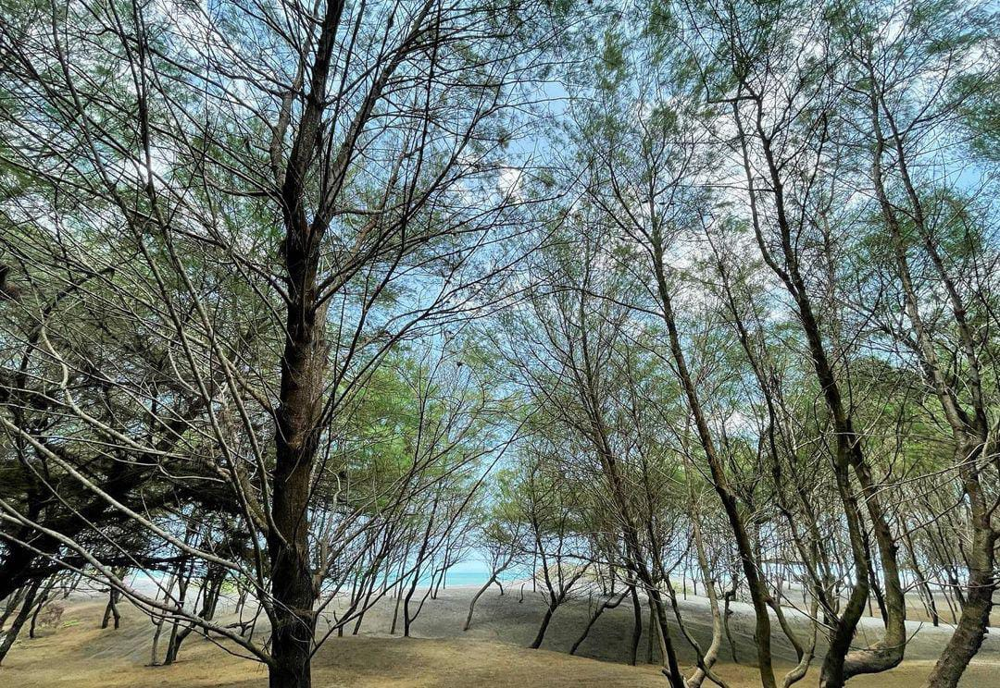

Pandansari
Pantai Pandansari adalah surga tersembunyi dengan pasir putih yang lembut dan air laut yang jernih. Pepohonan hijau menjulang di sepanjang pantai, memberikan nuansa alami yang menenangkan. Suara gemericik ombak yang lembut menyambut pengunjung dengan kehangatan dan ketenangan.Pantai Pandansari merupakan pantai yang berada di Bantul dengan view yang cukup menarik. Pantai ini memiliki marcusuar yang ikonik. Berkunjung disore hari, kita disajikan dengan suasana senja yang memanjakan mata. Akses jalan menuju pantai yang sangat mudah dijangkau, membuat pantai ini sangat rekomendasi buat dijelajahi wisatawan.
Goa Cemara
Goa Cemara adalah goa alam yang tersembunyi di antara tebing-tebing karst yang megah. Dikelilingi oleh pepohonan cemara yang rindang, suasana di dalam goa terasa sejuk dan tenang. Cahaya alami yang masuk melalui celah-celah batu menciptakan pemandangan yang magis dan mempesona.
Parangtritis
Parangtritis adalah pantai yang terkenal dengan panorama sunsetnya yang memukau. Pasir hitamnya yang halus dan ombak yang tenang menciptakan atmosfer yang menyenangkan bagi para pengunjung. Di sepanjang pantai, terdapat deretan warung-warung yang menawarkan hidangan lezat dan tempat duduk santai untuk menikmati pemandangan laut.
Cemara Sewu
Cemara Sewu adalah hutan cemara yang luas dengan suasana yang tenang dan sejuk. Pepohonan cemara yang tinggi menjulang memberikan naungan yang nyaman bagi para pengunjung yang ingin bersantai di bawahnya. Udara segar dan aroma alami dari hutan menciptakan pengalaman yang menyegarkan dan memanjakan indra.
